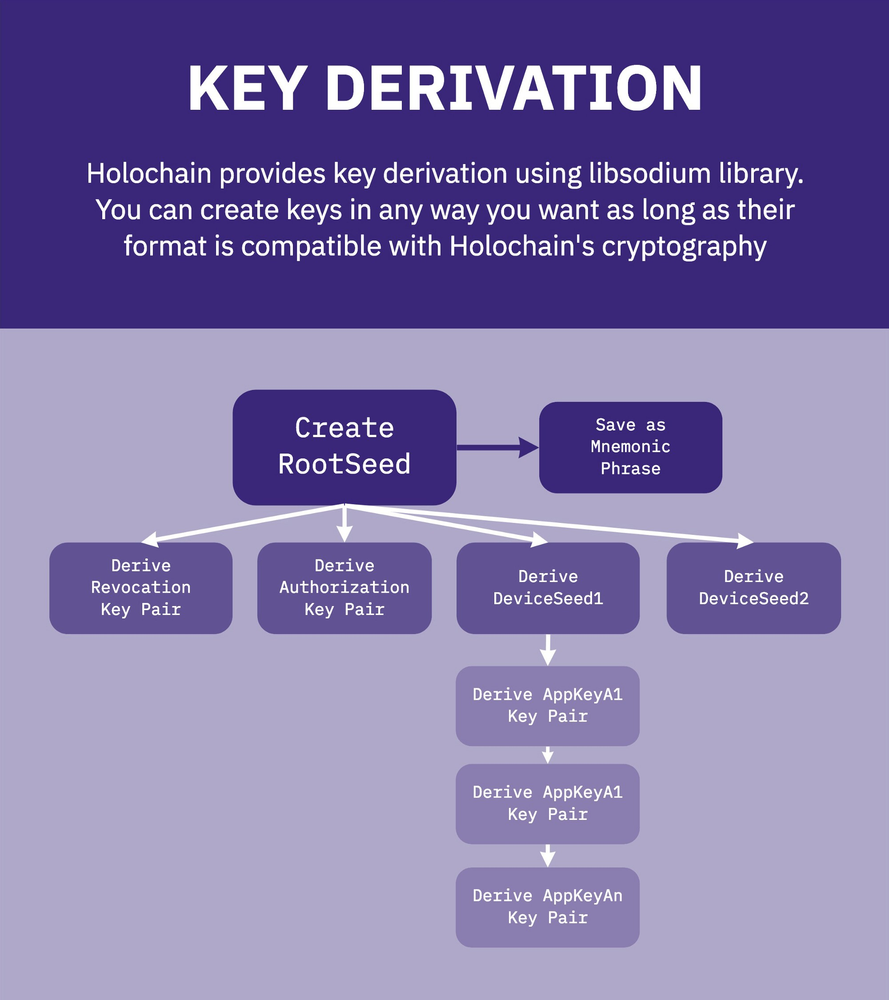

Related to Holochain Accounts
Now, let’s summarise what we mean by the secure context for Holochain apps and your HoloFuel Account.
- Mutuality & Consent: Cryptocurrencies typically operate based on a single signature from the spender. There is no evidence for the receiver to know that they are even party to a transaction, much less a crime if funds are being stolen. With HoloFuel, transactions are between agents who are mutually aware and consenting, and this consent is demonstrated by the countersignatures of each agent on the transaction saved to both chains.
- Imutability and Verifiability: Transactions are immutable and verifiable because of how they interact with the distributed hash table (DHT). Agents first inspect the state (signature history) of the other party and cryptographically sign their agreement. The headers are then saved to the DHT.
- Key Management: If your device with your keys and chain is lost or stolen, as long as you wrote down your master seed as advised, you can revoke those keys and instantiate new ones to prevent anyone else from using them, keeping control of your account.
- Possession of both the account (source chain) and the private keys is required to produce valid transactions of HoloFuel.
2019.02.21 Part 1: Holochain, Holo Accounts, and Cryptographic Key Management
What is an Account? So to be clear, we think of an account in terms of an individual DeepKey keyset.
2.0 “Account” Keys and LibSodium
Holochain (and Holo) care about two main cryptographic operations — signatures and encryption. Signatures are used for chain validity; in other words “did person X really create this entry?” Encryption is used both at rest, to secure persisted information on the disk, and in transit, to secure communications between parties.
A user will be able to backup a single seed value and reproduce all the keys generated from it, as well as make use of passwords and passphrases in a manner that is resistant to brute-force attacks.
2.1 Holochain Key Derivation

Each device you want to hook together under your keyset gets a different subset of keys that can be individually revoked, giving security isolation.
If a device is destroyed, and you are fairly certain the keys on it are not compromised, you could use your root seed and a backup of your private chain to rebuild your account on a new device — though you may want to go ahead and revoke the keys to be thorough.
So, what is the derivation process?
.....
2019.03.01 Part 2: Holochain, Holo Accounts, Cryptographic Key Management, and DeepKey
Developer Guide 4.14 Crypto Functions
Holochain DNA instances are designed to function in the context of a Distributed Public Key Insfrastructure (DPKI) which:
- manages key creation and revocation
- manages an agency context that allows grouping and verifying that sets of DNA instances are controlled by the same agent.
- creates a context for identity verification
Holochain assumes that there may be different DPKI implementations but provides a reference implementation we call DeepKey. We assume that the DPKI implementation is itself a Holochain application, and we provide access to a set of generic cryptographic functions. These functions also allow DNA authors to build ad-hoc cryptogrpahic protocols.
Developer Guide 12.2 Distributed Public Key Infrastructure (DPKI)
which lists:
TODO: merge the various docs we developed to explain DeepKey here.
As above https:⁄⁄medium.com⁄holochain⁄part-2-holochain-holo-accounts-cryptographic-key-management-and-deepkey-bf32ee91af65
End